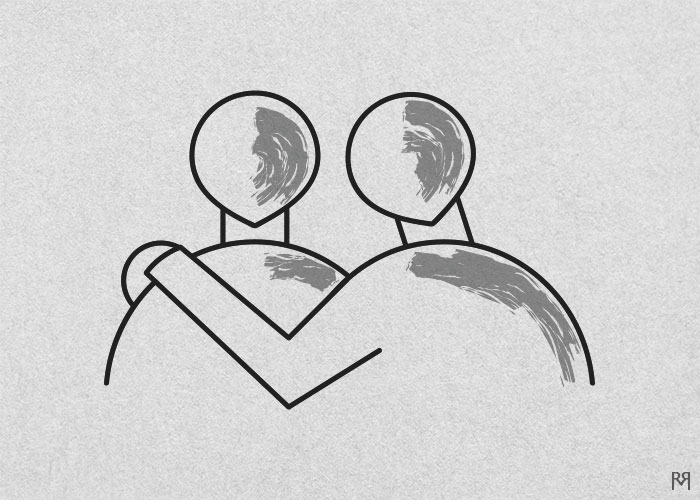

Mateo 11:28-30
Venid a mí, todos los que estáis cansados y cargados, y yo os haré descansar.
Tomad mi yugo sobre vosotros y aprended de mí, que soy manso y humilde de corazón, y HALLAREIS DESCANSO
PARA VUESTRAS ALMAS. Porque mi yugo es fácil y mi carga ligera.